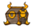
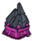

| Labyrinth | |
| |
|
| Abundant |  |
| Occasional |  |
| Rare | |
| “ | He must be lonely. Trapped in such a small cage. | ” |
| –Wendy, on the Ancient Guardian in the Labyrinth | ||
The Labyrinth is a biome found in the Ruins. As the name suggests, it's a twisting maze with many dead ends. Fortunately, the dead ends usually house an Ornate Chest, which can only be found in this biome. Dangling Depth Dwellers are wildly abundant in this area, and it will be almost impossible to avoid stepping on their webbing at some point unless using The Lazy Explorer. Nightmare Lights are very sparse in this biome.
At the end of the Labyrinth is a patch of mud with Lichen, Light Flowers, and Thulecite Walls. Here is the only place the Ancient Guardian is found.
| Biomes | |
| Surface | Chess • Grasslands • Graveyard • Forest • Marsh • Mosaic • Ocean • Rockyland • Savanna • Desert • Deciduous Forest |
| Caves | Mushtree Forest • Rocky Plains • Stalagmite Biomes • Sunken Forest • Cave Swamps |
| Ruins | Abyss • Labyrinth • Military • Sacred • Village • Wilds |
| Related | Bridges • Map • Road (Trail) • Turfs |